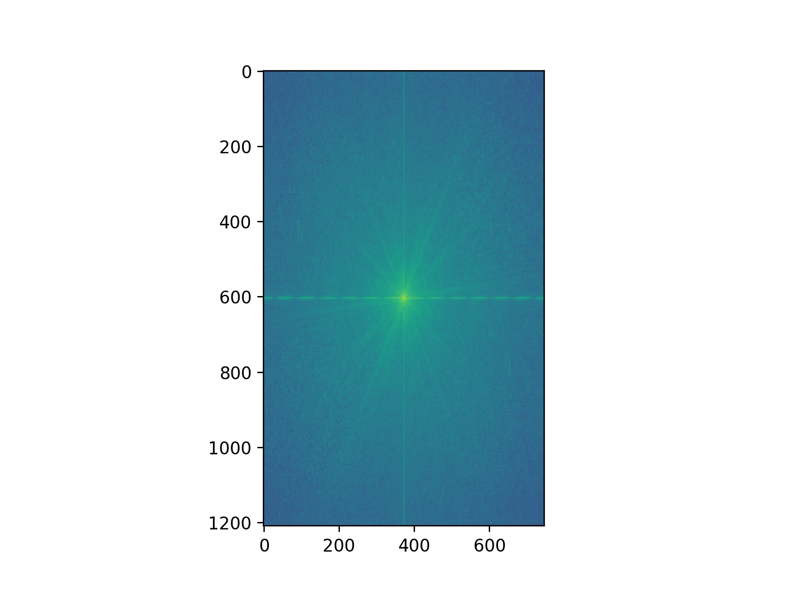

Discretized partial derivatives can simply be though of as subtracting the pixel value of our adjacent cell with our current cell. When the difference between pixel values is large, we can approximate an "edge" in the image. Depending on whether we do this in the x or y direction, we obtain two different directions of possible edges in the image. Shown below is the partials in the x and y direction.
To make this a binary image, we set the threshold to be greater than 0.1 or less than 0.1. This was a threshold determined by experimentation, and it basically means that two adjacent pixels must have a difference greater than abs(0.1) in order for us to count it as an edge in our image.
In our previous approach, we saw that our pictures were still noisy, mostly due to the fact that our approach in thresholding the image did not adequately suppress noise. Now we introduce a gaussian filter to blur the image before we apply our previous finite difference operators. Since convolutions are communative, I simply convolved my gaussian with my derivative in the x and y directions for the final edge image:
+ =The main differences that I see are the lack of extra noise around the grass. This is because the image was "smoothed" by the gaussian, so it essentially smoothed over those small edges.
We want to automatically straighten an image by iterating through a number of possible rotations for an image and picking one where there are maximum number of horizontal and vertical edges. We can calculate the angle of an edge by convolving our image with our derivative in the x and y directions, then taking the deg = arctan(y/x) of our convolved images. We've grouped all the angles of interest into histogram bins.
 =>
=>

 =>
=>
The edges in this minecraft image are not necessarily directlly horizontal or vertical, given the perspective of the camera. However, the algorithm still does a great job of aligning the image with respect to the vertical/horizontal edges that are given.
 =>
=>
The failure case arises from ther ebeing a lack of horizontal/vertical edges in an image.
The bins of the histogram are placed at +-180, +-90, and 0. The uncertainty value (width) of these bins are about 5 degrees. All angles of the image that are not characterized as right angles are collectively placed into a bin between these bins. Hence, that is why their peaks are so much higher.
To sharpen an image artificially, we can convolve our image with a gaussian to filter out the high frequencies, then subtract our original image from our filtered image. To do this in a single convolution, we can use a new filter calculated by: (1 + a) * unit_impulse - a * gaussian.


Although our artificial sharpening trick may appear to work, all it is really doing is making existing high frequencies even higher. We don't introduce any new information to our image. Thus, if we make an existing image blurry, we've essentially taken out all the "useful information" about our image, and thus will be unable to restore it with our techniique.


Cat's original photo -> Cat's high-passed photo.
Derek's original photo -> Derek's low-passed photo.
Their Fourier Domains added together. We expect to see that the high-frequencies of the cat directly be added onto Derek's low-passed frequencies.

Although the Trump + Biden mix may look well at first, but the low-pass filter has gone through and removed many of Trump's key features. As you may see below during our gaussian stack, it becomes difficult to discern between his features and joe's. Thus, I picked this image as the "failure" case. The cutoff frequency for this exercise was determined by sigma, the (standard deviation) term passed into creating a gaussian kernel. I found that the sigma passed in was inversely proportional to the cutoff frequency, that is the higher my sigma, the lower cut-off frequency was the the low-pass filter. I tinkered around with these tricks, as well as the size of the gaussian kernel itself to obtain the results which I have displayed. The larger the gaussian kernel, the lower the cutoff frequency is as well.